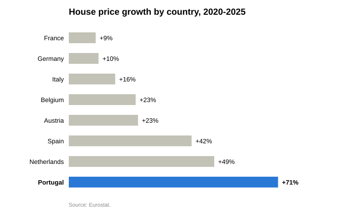

Portugal's house price index rose 71% between 2020 and 2025, according to Eurostat, while the country's own index of new-home construction costs rose 33% over the same period, data from Portugal's national statistics institute, INE, show. Prices grew at a compound rate of 11.3% a year — roughly double the 5.9% annual pace of construction costs.
The two measures started at the same level in 2020. By 2025, the house-price index had reached 171 against a construction-cost index of 133 (2020 = 100) — a gap of 38 percentage points that widened every year of the five-year period, this analysis found.
Among eight European countries with complete Eurostat house-price data through 2025, Portugal's 71% increase is the largest, ahead of the Netherlands (49%) and Spain (42%). Austria and Belgium each rose 23%, Italy 16%, and Germany and France — Europe's two largest economies — rose just 10% and 9% respectively.
Why it matters
A construction-cost index measures materials and labor: concrete, steel, wages on a building site. It does not include the price of land, a developer's profit margin, financing costs or taxes. When home prices rise much faster than it costs to build a home, the gap has to be explained by something else — land, demand, or the way housing itself is bought and sold. Economists and reporters covering Portugal's housing market have spent the past three years trying to identify which.

Where the extra demand came from
Two tax and residency programs made Portugal unusually attractive to foreign buyers for over a decade. The Golden Visa, in place since 2012, granted residency in exchange for investment, and real estate was for years the most popular route; the Non-Habitual Resident (NHR) regime offered qualifying foreign residents a flat 20% tax rate and exemptions on foreign income. Bloomberg reported in February 2023 that the Golden Visa alone had drawn €6.8 billion into Portugal since 2012, most of it into property.
The government moved to unwind both. Facing a housing crisis in which Lisbon rents had jumped 37% in a single year and more than half the country's workers earned under €1,000 a month, the government of then-Prime Minister António Costa — now president of the European Council — passed the "Mais Habitação" package in 2023, according to Reuters, ending new Golden Visa real-estate applications and banning new short-term rental licenses outside rural areas. The real-estate investment route was formally removed in October 2023, industry-law publication The National Law Review reported. The NHR regime closed to new applicants at the start of 2024 and was replaced by a narrower scheme, IFICI, limited largely to science and technology professionals, according to a 2025 client alert from the professional services firm KPMG.
Short-term rentals left an independently measurable mark on prices even before the 2023 crackdown. A peer-reviewed study published in Regional Science and Urban Economics in 2021 found that a one-percentage-point increase in a municipality's share of Airbnb listings was associated with a 3.7% increase in house prices nationally, with the effect concentrated in Lisbon, Porto and historic tourist districts.
Foreign demand also shows up directly in what buyers pay. Bloomberg reported in 2022 that foreign buyers in Lisbon paid a median €4,283 per square meter, more than double the €1,858 paid by local buyers — a two-tier market that a single national price index does not separate out, but that pulls the overall average up. That demand also proved resistant to the European Central Bank's 2022–2023 rate increases: Bloomberg reported in September 2023 that Portuguese prices kept climbing through the hiking cycle, in part because many foreign buyers purchased in cash and were largely insulated from mortgage costs.
Why supply hasn't caught up
Construction costs did rise — INE's most recent figures show the sharpest jump in the labor component since 2023 — but the bigger constraint may be that Portugal simply isn't building enough new homes to meet demand, regardless of price.
Foreign workers make up roughly 30% of Portugal's construction workforce, in a sector equivalent to about 8% of GDP, Reuters reported in July 2026. The same report cited a Bank of Portugal finding that net immigration had roughly halved in 2025 after the government tightened immigration rules — squeezing exactly the labor supply needed to build more housing even as officials tried to address the housing crisis. "Too much and too quickly," University of Porto economist Óscar Afonso told Reuters of the timing of the restrictions.
Zoning, heritage-preservation rules and permitting delays in Lisbon and Porto add a further, non-cost constraint on new supply, according to research from the real estate firm Cushman & Wakefield. A June 2026 Bank of Portugal study found the steepest price increases — homes more than doubling in value since 2017 — concentrated precisely in the supply-constrained metro areas of Lisbon, Porto and the Setúbal peninsula, according to reporting by the Portuguese outlet O Mirante.
That combination — costly, slow-to-expand supply meeting resilient, partly foreign, partly cash-financed demand — is close to the general mechanism economists use to explain why prices and building costs decouple almost anywhere. In a widely cited 2017 paper in the American Economic Review, Katharina Knoll, Moritz Schularick and Thomas Steger traced house prices across 14 advanced economies back to 1870 and found that rising land prices, not the cost of construction, explained roughly 80% of the global increase in house prices since 1950. Land, unlike concrete or labor, cannot be manufactured to meet demand.
A different story in Germany and France
Portugal's trajectory is not the European default. In its February 2025 Economic Bulletin, the European Central Bank noted that the recent house-price correction across the eurozone was led by "core" economies — Germany, France, the Netherlands, Austria, Belgium — reversing the pattern of the 2008 financial crisis and the euro debt crisis, when peripheral countries like Spain led the declines. Only 12 of 19 euro-area countries saw prices fall at all in this cycle, a far less widespread downturn than in the past.
Germany's prices fell 4.1% in 2023 after rising 9% the year before, the Bundesbank reported, as high inflation and the ECB's rate increases pushed buyers toward renting instead. A Reuters poll of property analysts in May 2024 forecast a further German price decline, even as annual housing completions dropped toward 195,000 units — evidence, the poll suggested, that Germany's weakness reflected an affordability shock hitting demand rather than a glut of new supply.
The ECB's own breakdown of housing investment found Germany down 18% and France down 13% since 2022, while Italy and Spain grew — Italy helped by renovation-incentive subsidies. The contrast suggests that the same interest-rate cycle that cooled demand in Germany and France left Iberian markets largely undisturbed, because a meaningful share of buyers there were not relying on mortgages in the first place.
Explore the map
House-price growth by country, 2020–2025 — hover or click a country for details, toggle layers, zoom and pan.
What the data don't show
This analysis compares two indices, not two prices — it measures how fast each grew from a common 2020 starting point, not what a home or a construction project actually costs in euros today. Portugal is also the only country in this comparison with a construction-cost series running through 2025; for the other seven, only the price side of the story could be measured here, so it isn't possible to say from this data alone whether Spain's or the Netherlands' price growth outpaced their own building costs by a similar margin. INE's construction-cost figure was checked against a second, independent Eurostat series through 2023, the two agreeing within 1.1 percentage points.
Nor does any single factor above fully explain the 38-point gap; the reporting and research cited here identify contributing pressures — foreign and tax-driven demand, tourism conversion of housing stock, a shrinking construction labor pool, land scarcity, slow permitting — without assigning each one a precise share of the total.
Sources
- Eurostat, House price index (prc_hpi_a) — ec.europa.eu/eurostat
- INE, Índice de custo da construção de habitação nova — ine.pt
- Reuters, "Portugal ends golden visas, curtails Airbnb rentals to address housing crisis," Feb. 2023 — investing.com
- Bloomberg, "Rising House Prices Push Portugal to End Golden Visa Program," Feb. 2023 — bloomberg.com
- The National Law Review, "Portugal Ends Real Estate Investment Visa Program," Oct. 2023 — natlawreview.com
- KPMG, Flash Alert on Portugal's IFICI tax regime, 2025 — kpmg.com
- Franco, Santos & Longo, "The impact of Airbnb on residential property values and rents: Evidence from Portugal," Regional Science and Urban Economics, vol. 88, 2021 — ideas.repec.org
- Bloomberg, "Foreigners spend twice the money on a Lisbon home than locals," Apr. 2022 — bloomberg.com
- Bloomberg, "Portugal House Prices Defy Interest Rate Hikes on Strong Foreign Demand," Sept. 2023 — bloomberg.com
- Reuters, "Portugal's migrant curbs hit construction firms working to solve housing crisis," Jul. 2026 — investing.com
- Banco de Portugal study, reported by O Mirante, Jun. 2026 — omirante.pt
- INE construction-cost data, reported by ECO, Jun. 2026 — eco.sapo.pt
- Cushman & Wakefield Portugal, "Residential Development in Lisbon and Porto — The Supply Challenge" — cushmanwakefield.com
- Knoll, Schularick & Steger, "No Price Like Home: Global House Prices, 1870–2012," American Economic Review, 107(2), 2017 — aeaweb.org
- European Central Bank, "Developments in the recent euro area house price cycle," Economic Bulletin 2/2025 — ecb.europa.eu
- European Central Bank, box on euro area housing investment, Economic Bulletin 1/2026 — ecb.europa.eu
- Deutsche Bundesbank, "House prices fell significantly in 2023; more pressure on rents," 2024 — bundesbank.de
- Reuters poll of property analysts, May 2024 — investing.com